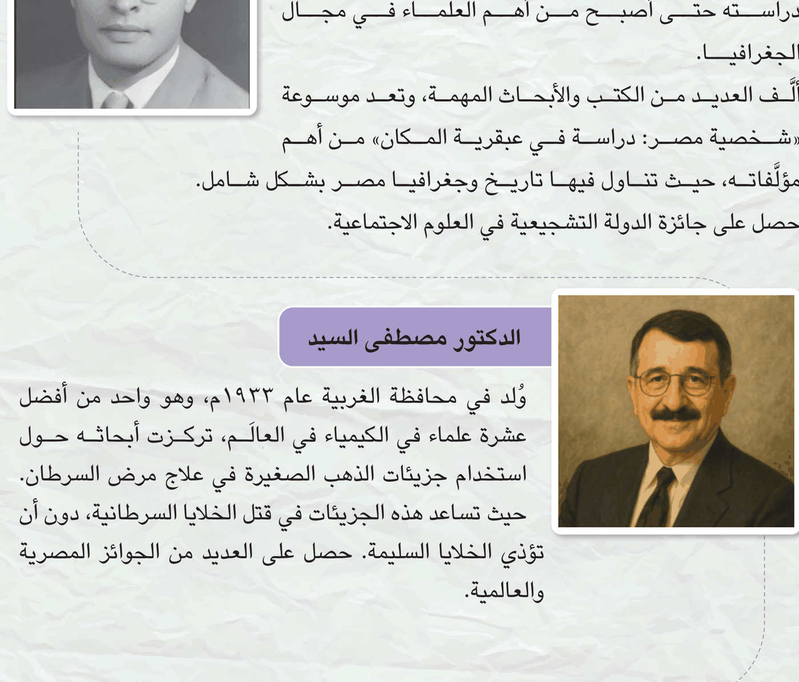

الوحدة الثالثة: مصر وطننا • الجزء الثالث
حبا الله مصر بثروات طبيعية هائلة في باطن أرضها وصحاريها الشاسعة:
| نوع الثروة | أهم الموارد والمعادن | أهم مناطق استخراجها في مصر |
|---|---|---|
| المعادن الثمينة | • الحديد: الواحات البحرية بالصحراء الغربية. • الفوسفات: هضبة أبو طرطور بالوادي الجديد. • المنجنيز: منطقة أم بجمة بشبه جزيرة سيناء. • الذهب: منجم السكري بالصحراء الشرقية. |
تدخل في صناعات الحديد والصلب، والأسمدة، والصلب، والحلي. |
| مصادر الطاقة النظيفة | • الطاقة الشمسية: قرية بنبان بأسوان (أكبر محطة شمسية). • طاقة الرياح: محطة جبل الزيت بمحافظة البحر الأحمر. |
توليد كهرباء نظيفة صديقة للبيئة لا تنفد ولا تلوث الهواء. |
| المحميات الطبيعية | • محمية رأس محمد: بجنوب سيناء (شعاب مرجانية وأسماك نادرة). • محمية وادي الريان: بالفيوم (شلالات وبحيرات وحفريات حيتان). |
حماية الكائنات الحية النادرة وتنشيط السياحة البيئية. |

1- د. جمال حمدان: عالم جغرافيا وكاتب مصري عظيم، كرس حياته لدراسة موقع مصر وتاريخها، وألّف موسوعته الشهيرة «شخصية مصر» التي أثبتت عبقرية المكان المصري.
2- د. أحمد زويل: عالم كيميائي مصري حائز على جائزة نوبل في الكيمياء عام 1999م لاختراعه ميكروسكوب يصور التفاعلات الكيميائية في زمن الفيمتو ثانية، وأسس مدينة زويل للعلوم والتكنولوجيا.
تضم أرض مصر معالم أثرية خالدة تعكس تنوع حضارتها عبر العصور الفرعونية والقبطية والإسلامية والحديثة:

| المَعلم التاريخي | الموقع في مصر | الأهمية والقيمة التراثية والتاريخية |
|---|---|---|
| أهرامات الجيزة وأبو الهول | محافظة الجيزة | بناها ملوك الفراعنة (خوفو، خفرع، منكاورع)، وتعد إحدى عجائب الدنيا السبع القديمة. |
| معابد الأقصر والكرنك | محافظة الأقصر | تضم الأقصر ثلث آثار العالم القديم وتعد أكبر متحف مفتوح للآثار في العالم. |
| قلعة صلاح الدين الأيوبي | محافظة القاهرة (جبل المقطم) | حصن عسكري إسلامي بناه القائد صلاح الدين لحماية القاهرة وتضم جامع محمد علي. |
| دير سانت كاترين والكنيسة المعلقة | جنوب سيناء والقاهرة القديمة | من أقدم الأديرة والكنائس المسيحية في العالم ورمز للتسامح والتعايش الديني. |
| الجامع الأزهر الشريف | محافظة القاهرة | منارة العلوم الإسلامية وقبلة الطلاب من أكثر من 100 دولة حول العالم. |
( أ- الواحات البحرية | ب- أبو طرطور | جـ- أم بجمة | د- منجم السكري )
( أ- جنوب سيناء | ب- الفيوم | جـ- البحر الأحمر | د- مطروح )
( أ- د. جمال حمدان | ب- د. أحمد زويل | جـ- طه حسين | د- نجيب محفوظ )
( أ- الكنيسة المعلقة | ب- الجامع الأزهر | جـ- معبد الكرنك | د- قلعة صلاح الدين )
( أ- جبل الزيت | ب- بنبان | جـ- السد العالي | د- شبرا الخيمة )
| العمود (أ) - المعدن أو المورد | العمود (ب) - منطقة الاستخراج |
|---|---|
| (1) معدن الحديد | ( ) هضبة أبو طرطور بالوادي الجديد. |
| (2) معدن الفوسفات | ( ) منجم السكري بالصحراء الشرقية. |
| (3) معدن الذهب | ( ) الواحات البحرية بالصحراء الغربية. |
الإجابة: ................................................................................................................................................................................
الإجابة: ................................................................................................................................................................................
الإجابة: ................................................................................................................................................................................
1- المحمية الطبيعية (مساحة محمية قانوناً لصيانة الكائنات الحية والبيئة الطبيعية).
2- منجم السكري (أحد أكبر مناجم استخراج وإنتاج الذهب في العالم).
3- الدكتور أحمد زويل (عالم نوبل في الكيمياء وفخر العلماء المصريين).
4- قلعة صلاح الدين الأيوبي (حصن دفاعي عسكري تاريخي يحمي العاصمة).
5- قرية بنبان بأسوان (عاصمة الطاقة الشمسية النظيفة في العالم).
(1) أ- الواحات البحرية | مهد استخراج خام الحديد في مصر.
(2) أ- جنوب سيناء | عند نقطة التقاء خليجي السويس والعقبة.
(3) أ- د. جمال حمدان (أعظم من حلل وكتب عن جغرافية وتاريخ مصر).
(4) أ- الكنيسة المعلقة | من أقدم الكنائس وبنيت فوق برجي حصن بابليون.
(5) أ- جبل الزيت | أكبر محطة لتوليد الكهرباء من طاقة الرياح بالشرق الأوسط.
(1) ( ✗ ) خطأ. التصويب: يستخرج الفوسفات من أبو طرطور بالوادي الجديد، بينما أم بجمة للمنجنيز.
(2) ( ✓ ) صواب. تضم شلالات وبحيرات وادي الحيتان الجيولوجي العالمي.
(3) ( ✗ ) خطأ. التصويب: هذا سلوك مرفوض ومدمر؛ يجب الحفاظ على الآثار وعدم لمسها.
(4) ( ✓ ) صواب. تضم معبد الكرنك والأقصر وطريق الكباش ومقابر وادي الملوك.
(5) ( ✓ ) صواب. العقل والجهد البشري المصري هو الذي صنع الحضارة وبنى المشروعات.
السؤال الرابع (التوصيل): (1) الحديد مع الواحات البحرية | (2) الفوسفات مع أبو طرطور | (3) الذهب مع منجم السكري.
السؤال الخامس (بم تفسر):
(1) لحماية النباتات والحيوانات والأسماك والشعاب المرجانية النادرة والمعرضة لخطر الانقراض، ولتنشيط السياحة البيئية والعلمية.
(2) لأن حسن المعاملة يترك انطباعاً طيباً ويعكس كرم وأخلاق الشعب المصري، ويشجع السياح على تكرار زيارة مصر مما يزيد الدخل القومي وفرص العمل.
السؤال السادس (ماذا يحدث إذا):
(1) لتلوثت البيئة وزادت الانبعاثات الكربونية الضارة والاحتباس الحراري، ولنفدت مصادر الطاقة غير المتجددة بمرور الوقت.